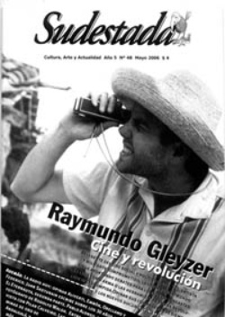

Buscar
Las minas de Andalgalá: Las montañas son nuestras, el oro ajeno
Andalgalá es la tercera ciudad en importancia de Catamarca. Desde hace diez años allí funciona una de las minas de oro y cobre más importante del mundo. Habitantes del lugar aseguran que el emprendimiento no trajo ningún bienestar, denuncian contaminación y un Estado cómplice. La empresa aclara que todo su accionar está sujeto a la ley. Crónica desde un pueblo pobre que vive sobre montañas de oro. por Darío Aranda, desde Andalgalá, Catamarca.
Edición N° 48
Mayo 2006
Revista bimensual
Comprar edición impresaSumario
- Raymundo Gleyzer: Cine y revolución
- Los ojos de Rodolfo Walsh
- El negocio siempre cierra
- Días de radio
- Las vueltas de un Eternauta
- Las minas de Andalgalá: Las montañas son nuestras, el oro ajeno
Compartir Articulo
Potosí en Bolivia y Mina Gerais en Brasil fueron, hace cinco siglos, las regiones de América del Sur más ricas en oro y plata. Toneladas de minerales fueron extraídas con mano de obra esclava y embarcadas a Europa. Las dos ciudades tuvieron sus décadas de esplendor, pero hoy son de las más empobrecidas del mundo. Esas son las referencias que toman los vecinos de Andalgalá, en Catamarca, para alertar y denunciar la misma situación que, cinco siglos después, ocurre en la mina de oro y cobre más grande de Argentina y una de la más imponente del mundo: Minera Alumbrera, de un consorcio suizo canadiense, ubicada a 240 kilómetros de la capital provincial, en un pueblo pobre que -paradójicamente- vive sobre montañas de oro.
Las organizaciones sociales denuncian contaminación de suelo, aire y agua en tres provincias -Catamarca, Tucumán y Santiago del Estero-, y advierten que el mayor desastre comenzará en breve: una nueva mina, tres veces más grande, aún más cerca del pueblo y en las cumbres que proveen agua a toda la región. Crónica desde Andalgalá, la Potosí argentina del Siglo XXI, el caso testigo de una contaminación silenciosa y una industria que exporta recursos naturales con alta rentabilidad.
País minero
Esquel, en Chubut, e Ingeniero Jacobacci, en Río Negro, son el antes de la explotación minera metalífera -oro, plato y cobre, entre otros-. Jáchal, en San Juan, el durante. Andalgalá, en Catamarca, el después de la extracción: cuando el oro ya no está y la montaña es un coloso agujereado. Son sólo cuatro del medio centenar de emprendimientos mineros metalíferos de Argentina, que tienen tantos impulsores como detractores. Estado y empresariado por un lado. Organizaciones sociales y pobladores por el otro. Promesas de inversiones, trabajo y desarrollo de un lado. Denuncias de degradación ambiental, pobreza y saqueos por el otro.
"Sin duda lo sucedido en Esquel, el caso más difundido, fue el despertar de muchos lugares, el preguntarse de muchos pueblos sobre la contaminación que origina este tipo de minería", explica con paciencia docente Marcos Pastrana, de Tafí del Valle, Tucumán, hasta donde llega la contaminación de Andalgalá, en la vecina provincia de Catamarca.
Esquel había saltado a la tapa de los diarios en 2002. La empresa Meridian Gold planeaba -y aún planea- extraer oro y plata en una mina a cielo abierto, a nueve kilómetros del centro urbano, empleando seis toneladas diarias de cianuro de sodio y dinamitando miles de toneladas de roca por día. Luego de decenas de movilizaciones de la población, el 23 de marzo de 2003 la propia comunidad realizó una consulta popular donde el 81 por ciento del electorado rechazó el emprendimiento, sobre todo por los perjuicios ambientales para toda la región y la modificación que ocasionaría en la vida del lugar. Sin embargo, la empresa aún no canceló su proyecto. Ni el gobierno provincial, ni municipal, tomaron partido por los habitantes.
Pero muy distinto a Esquel es el caso del departamento de Andalgalá, en Catamarca, donde el daño ya está hecho: desde hace una década está instalada Minera Alumbrera, que explota un yacimiento de oro y cobre a cielo abierto. No utiliza cianuro, pero las acusaciones de contaminación igual se derraman por el suelo provincial.
Las acusaciones
El fiscal Antonio Estofán denunció a la empresa por contaminación. El juez federal de Santiago del Estero Felipe Terán investiga una denuncia de presencia de cobre y plomo en el norte provincial y una posible contaminación que llegaría hasta las turísticas termas de Río Hondo. La justicia de Rosario investiga el presunto tráfico documental y la exportación ilegal de metales. Pobladores de Villa Vil, en Catamarca, denunciaron a la empresa por un derrame tóxico del mineraloducto. Organizaciones sociales de Tafí del Valle, en Tucumán, advierten sobre contaminación del aire, radiaciones del electroducto de la empresa e invasión de cementerios indígenas. Son sólo cinco de las decenas de acusaciones que tiene en su contra Minera Alumbrera, impulsadas por una gran diversidad de sectores, localidades y provincias.
La nota completa en la edición gráfica de Sudestada Nº48
Comentarios
Darío Aranda
Articulos más vistos


LIBRERÍA SUDESTADA

Colección infantil

Distribuidora de Libros

Suscripción

Sudestada en URUGUAY

Otros articulos de esta edición
Raymundo Gleyzer: Cine y revolución
El 27 de mayo de 1976 Raymundo Gleyzer fue secuestrado por un grupo de tareas. De esta forma la dictadura ...
Los ojos de Rodolfo Walsh
Detrás de aquel cronista inolvidable, resuelto a recorrer los rincones más ocultos de la geografía argentina, había un fotógrafo que ...
Días de radio
La radio hoy atraviesa una crisis que va desde la producción periodística hasta sus protagonistas, de las pocas ideas a ...
Las vueltas de un Eternauta
Polémica como pocas historietas, la segunda parte de El Eternauta dibuja el relieve de la transformación política y personal de ...
El negocio siempre cierra
La exposición del escritor Tomás Eloy Martínez en la inauguración de la última edición de la Feria del Libro ...